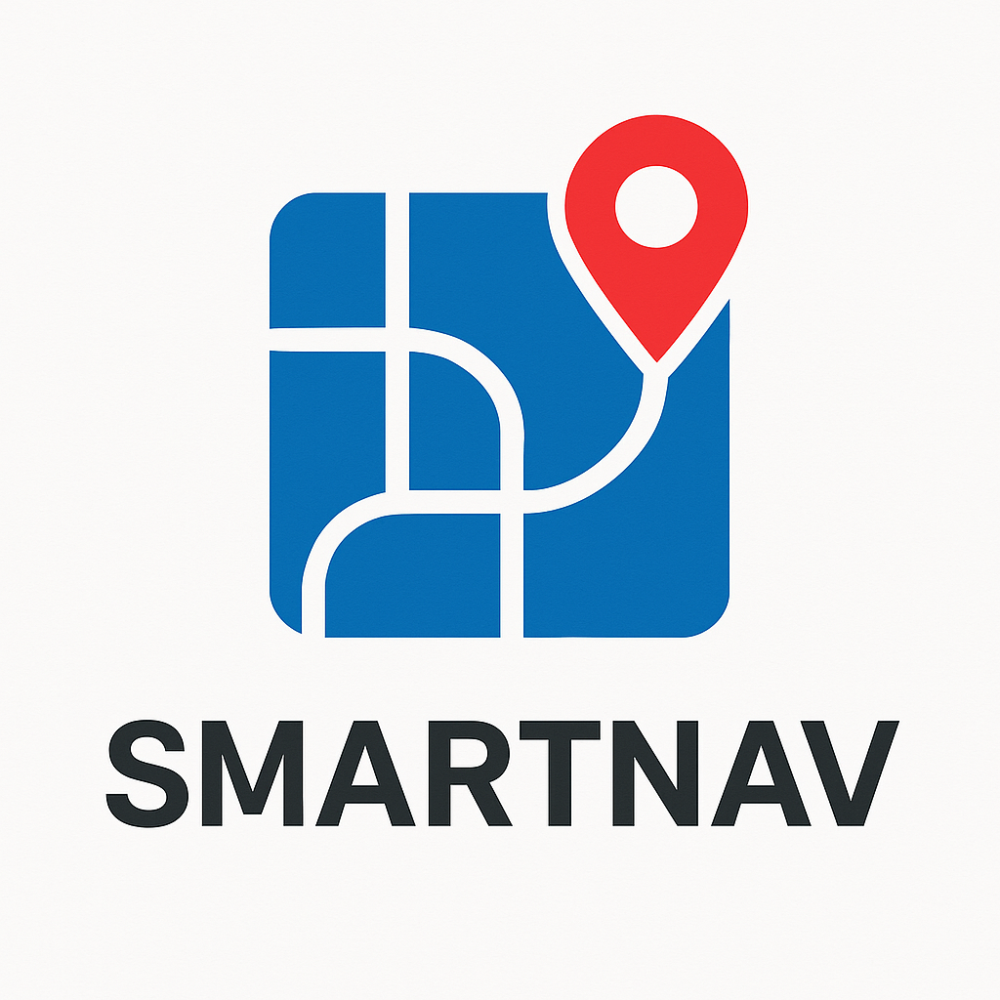

Professional Skills Showcase
Exploring Innovation & Excellence
Portfolio Topics
Brain Analysis
Left & Right Brain Understanding
- Self-Analysis
- Personal Strengths
- Development Areas
Profile Sheet
Interview Preparation
- 20 Key Questions
- Career Goals
- Technical Skills
Presentation Skills
Communication Excellence
- Content Structure
- Visual Aids
- Audience Engagement
Writing Skills
7C\'s of Communication
- Email Writing
- Professional Tone
- Clear Structure
Group Discussion
GD Techniques
- Do's & Don'ts
- GD Types
- Idea Generation
Featured Projects

SMARTNAV – Smarter Routes for Faster Deliveries
SMARTNAV is an intelligent routing system that combines Floyd-Warshall and A* algorithms to optimize delivery routes for fast commerce. Designed to minimize delivery time and fuel usage, it provides real-time pathfinding in large, structured networks. With a simple UI and scalable performance, SMARTNAV enhances logistics for the on-demand delivery era.
Java
JavaScript
CSS
HTML

LivAna 3.0
LivAna is a smart mobile app that connects students with nearby PGs, grocery stores, and mess services—all in one place. With trusted reviews, service details, and an AI-moderated student forum, LivAna makes relocation stress-free and builds a safer, more connected campus community.
Flutter
Dart
C++
Swift
CMake
Get in Touch
adityaanurag461@gmail.com
Phone
8809691824
Location
Dehradun, Uttarakhand